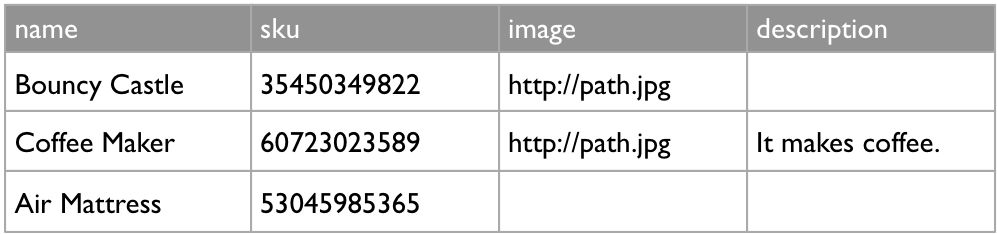
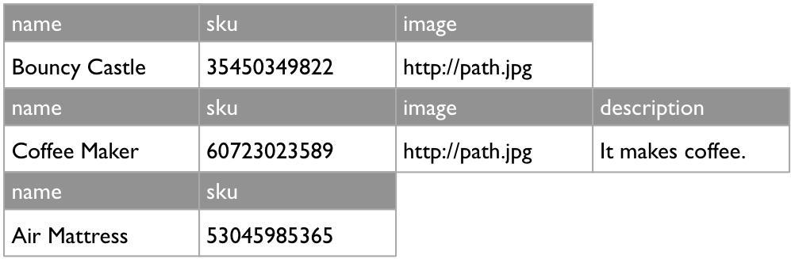

The Usergrid Data Store¶
The Usergrid data store is backed by Cassandra, an open source distributed DBMS. Cassandra isn’t a relational database system (RDBMS), and is sometimes placed in the category of “NoSQL” or “schema-less” databases.
Note
Usergrid is not a relational database. Optimizing for performance on a non-relational database like Cassandra differs a bit from relational databases. For more information, see Optimizing access to your Usergrid data store.
Cassandra is specifically designed to support applications that need flexibility and high scalability, particularly web and mobile applications. Usergrid client applications write and read data formatted as JavaScript Object Notation (JSON). (Usergrid provides SDKs through which client apps can do much of this work in their native language. For more information, see Usergrid SDKs.)
With Cassandra as the underlying DBMS, apps benefit from:
Fast writes to the data store. * A distributed architecture that means no single point of failure. * Flexibility in data model design. You aren’t constrained by a schema. * Linear scalability.
If you have experience with relational databases and are unfamiliar with “NoSQL” databases, the following table might be a helpful start. It maps the high-level concepts of an RDBMS’s data model both to Cassandra’s and to the Usergrid, which is backed by Cassandra.
RDBMS |
Cassandra |
Usergrid |
|
|---|---|---|---|
Each tuple is modeled as |
A row. |
A row. |
An entity. Written and retrieved as JSON, an entity contains values for all of its properties in the way a row has values for columns. |
Each data attribute is modeled as |
A column. |
A column. Many thousands of columns are supported. |
A entity property. An entity has a default set of properties, including the entity’s UUID. You can add many more to support your application. |
Each group of attributes is modeled as |
A table. |
A column family. Unlike rows in tables, rows in a column family can have differing numbers of columns. Because you’re not using a schema to define the model, you can update the column list for a row at any time. |
An entity collection. As with its underlying Cassandra column family, a collection can have entities with differing numbers of properties. In other words, just because one entity has an authorId property doesn’t mean that other entities in its collection need to. |
The following examples from a product database provide simple illustrations of these differences.
An RDBMS table has a schema-defined set of columns per row.
A Cassandra column family includes rows that can have differing column sets.
In the JSON from the Usergrid application, the products are represented as entities. Note that each entity in the entities array below has a slightly different set of properties, like the columns in a Cassandra column family.
{
"action" : "get",
"application" : "<app_uuid>",
"params" : {},
"path" : "/products",
"uri" : "https://api.usergrid.com/my_org/my_app/products",
"entities" : [ {
"uuid" : "<product_uuid>",
"type" : "product",
"created" : 1395410098517,
"modified" : 1395410098517,
"image" : "http://path.jpg",
"metadata" : {
"path" : "/products/<product_uuid>"
},
"name" : "Bouncy Castle",
"sku" : "35450349822"
},
{
"uuid" : "<product_uuid>",
"type" : "product",
"created" : 1395409669686,
"modified" : 1395409669686,
"image" : "http://path.jpg",
"metadata" : {
"path" : "/products/<product_uuid>"
},
"description" : "It makes coffee.",
"name" : "Coffee Maker",
"sku" : "60723023589"
},
{
"uuid" : "<product_uuid>",
"type" : "product",
"created" : 1395407700578,
"modified" : 1395407700578,
"metadata" : {
"path" : "/products/<product_uuid>"
},
"name" : "Air Mattress",
"sku" : "53045985365"
}],
"timestamp" : 1396290037640,
"duration" : 91,
"organization" : "my_org",
"applicationName" : "my_app",
"count" : 3
}